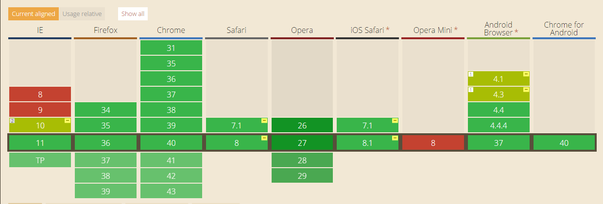
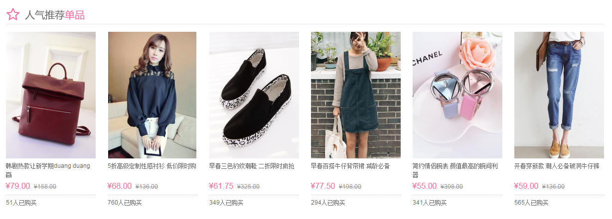
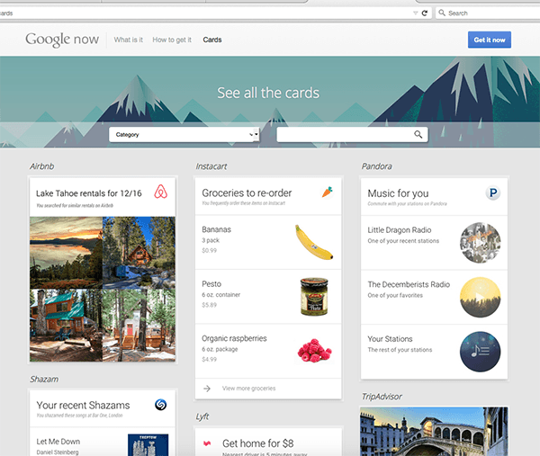
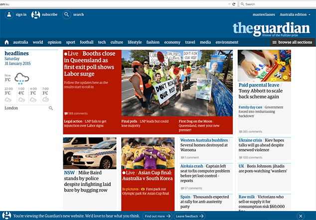
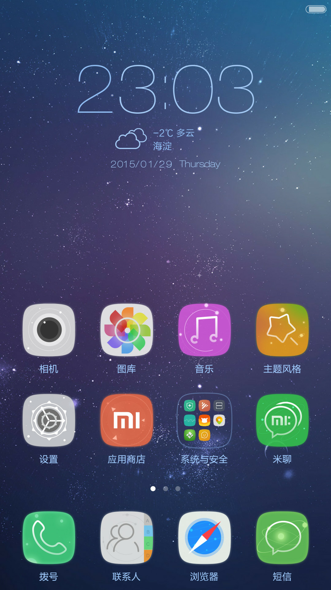
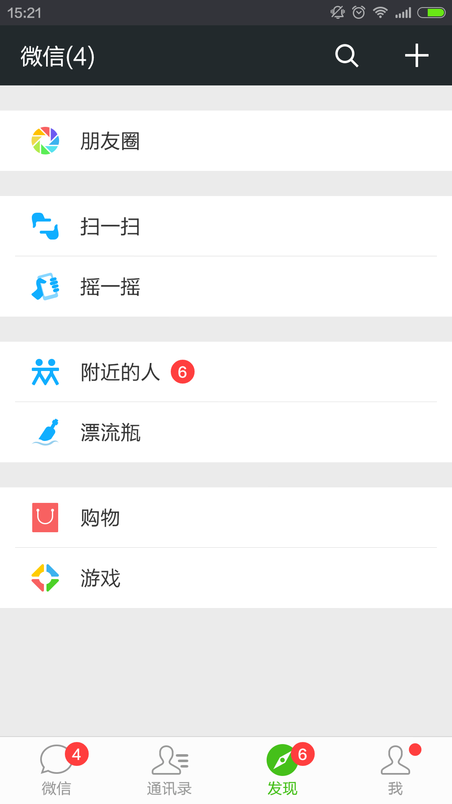
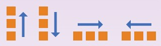

Css3-flexbox
- 介绍
- 伸缩布局盒模型和术语
- 伸缩容器 ―「display」的值「flex」与「inline-flex」
- 伸缩容器的主轴方向 ―「flex-direction」属性
- 伸缩行换行 ―「flex-wrap」属性
- 伸缩方向与换行 ―「flex-flow」缩写
- 显示顺序 ―「order」属性
- 主轴对齐 ―「justify-content」属性
- 侧轴对齐 ―「align-items」与「align-self」属性
- 堆栈伸缩行 ―「align-content」属性
- 伸缩性 -「flex-grow」属性、「flex-shrink」属性、「flex-basis」属性、「flex」缩写
- flexBox兼容
- 例子
介绍
- 从2012年9月 CSS Flexible Box Layout Module(www.w3.org/TR/css3-flexbox/)已经成为候选推荐标准（CR）
- 各大浏览器支持程度较好「查」
- 通过灵活使用Flexbox的新旧语法、添加浏览器前缀、sass等实现最佳浏览器兼容
- Flexbox布局最适合应用程序的组件和小规模的布局，（网格布局更适合那些更大规模的布局）
旨在提供一个更加有效的方式制定、调整和分布一个容器里的项目布局，即使他们的大小是未知或者是动态的；让容器有能力让其子项目能够改变其宽度、高度、顺序，以最佳方式填充可用空间
你现在就可以使用Flexbox
通过Flexbox使布局更加方便灵活
- 
- 
- 
- 
- 
Flexbox模型

伸缩容器 ―「display」的值「flex」与「inline-flex」
| 名称： | display |
| 新值： | flex | inline-flex |
伸缩容器的主轴方向 ―「flex-direction」属性

| 名称： | flex-direction |
| 取值： | row | row-reverse | column | column-reverse |
| 初始： | row |
| 适用于： | 伸缩容器 |
- 「row」伸缩容器的主轴与当前书写模式的行内轴（文字布局的主要方向，即'direction': ltr | rtl）同向
- 「row-reverse」与row相反
- 「column」伸缩容器的主轴与当前书写模式的块轴（块布局的主要方向，即'writing-mode': horizontal-tb | vertical-rl | vertical-lr）同向
- 「column-reverse」column-reverse
伸缩行换行 ―「flex-wrap」属性
| 名称： | flex-wrap |
| 取值： | nowrap | wrap | wrap-reverse |
| 初始： | nowrap |
| 适用于： | 伸缩容器 |
- 「flex-wrap」属性控制伸缩容器是单行还是多行，也决定了侧轴方向 ― 新的一行的堆放方向
- 「nowrap」伸缩容器为单行
- 「wrap」伸缩容器为多行，新的一行的堆放方向为侧轴的方向
- 「wrap-reverse」伸缩容器为多行，新的一行的堆放方向与侧轴的方向相反
伸缩方向与换行 ―「flex-flow」缩写
| 名称： | flex-flow |
| 取值： | <「flex-direction」> || <「flex-wrap」>
|
显示顺序 ―「order」属性
| 名称： | order |
| 取值： | <number>数值越小越靠前，若有多个项目有相同的「order」值，这些项目照文件顺序排 |
| 初始： | 0 |
| 适用于： | 所有元素 |
#main { display: flex; }
#main > article { flex:1;
order: 2; }
#main > nav { width: 200px;
order: 1; }
#main > aside { width: 200px;
order: 3; }
@media all and (max-width: 600px) {
#main { flex-flow: column; }
#main > article, #main > nav,
#main > aside {
/* 回到文件顺序 */
order: 0; width: auto;
}
}
主轴对齐 ―「justify-content」属性
| 名称： | justify-content |
| 取值： | flex-start | flex-end | center | space-between | space-around |
| 初始： | flex-start |
| 适用于： | 可伸缩容器 |

侧轴对齐 ―「align-items」与「align-self」属性

堆栈伸缩行 ―「align-content」属性
「flex-grow」属性
| 名称： | flex-grow |
| 取值： | <number>负值不合法 |
| 初始： | 0 |
| 适用于： | 伸缩项目 |
| 动画： | 是，除了在「0」与其他值之间转变以外。
|
「flex-grow」此
「flex-shrink」属性
| 名称： | flex-shrink |
| 取值： | <number>负值不合法 |
| 初始： | 1 |
| 适用于： | 伸缩项目 |
| 动画： | 是，除了在「0」与其他值之间转变以外。
|
「flex-shrink」此
「flex-basis」属性

「flex」缩写
- 「flex: 0 auto」 「flex: initial」与「flex: 0 1 auto」相同。（这也就是初始值。）根据「width」／「height」属性决定元素的尺寸。（如果项目的主轴长度属性的计算值为「auto」，则会根据其内容来决定元素尺寸。）当剩余空间为正值时，伸缩项目无法伸缩，但当空间不足时，伸缩项目可收缩至其最小值。网页作者可以用对齐相关的属性以及「margin」属性的「auto」值控制伸缩项目沿着主轴的对齐方式。
- 「flex: auto」与「flex: 1 1 auto」相同。根据「width」／「height」属性决定元素的尺寸，但是完全可以伸缩，会吸收主轴上剩下的空间。如果所有项目均为「flex: auto」、「flex: initial」或「flex: none」，则在项目尺寸决定后，剩余的正空间会被平分给是「flex: auto」的项目。
- 「flex: none」与「flex: 0 0 auto」相同。根据「width」／「height」属性决定元素的尺寸，但是完全不可伸缩。其效果与「initial」类似，但即使在空间不够而溢出的情况下，伸缩项目也不能收缩。
- 「flex: [positive-number]」与「flex: [positive-number] 1 0px」相同。该值使元素可伸缩，并将伸缩基准值设置为零，导致该项目会根据设置的比率占用伸缩容器的剩余空间。如果一个伸缩容器里的所有项目都使用此模式，则它们的尺寸会正比于指定的伸缩比率。
| 名称： | flex |
| 取值： | none | [ <'flex-grow'> <'flex-shrink'>? || <'flex-basis'> ] |
| 初始： | 参见各属性 |
| 适用于： | 伸缩项目 |
「flex」的常见值
例：
#section1{ flex: 1; }
#section2{ flex: 1; }
#section3{ flex: 1; }
#section1{ flex: 1; }
#section2{ flex: 2; }
#section3{ flex: 3; }
#section1{ width: 200px; }
#section2{ flex: 1; }
#section3{ flex: 2; }
#section1{ flex: 200px; }
#section2{ flex: 1; }
#section3{ flex: 2; }
#section1{ flex: auto; }
#section2{ flex: initial; }
#section3{ flex: none; }
#section1{ flex: 1 3 400px; }
#section2{ flex: 1 1 100px; }
#section3{ flex: 3 2 200px; }
由于子元素设置了伸缩基准值flex-basis，相加400+100+200=700， 1.定义了父容器宽（即主轴宽）为800px，那么父容器剩下800-700=100px； section1扩展量：1/5*100，即等于20px section2扩展量：1/5*100，即等于20px section3扩展量：3/5*100，即等于60px 最后实际宽度分别为：400+20=420px, 100+20=120px, 200+60=260px 2.定义了父容器宽（即主轴宽）为500px，那么子元素将会溢出700-500=200px； 由于同时设置了收缩因子，所以加权综合可得400*3+100*1+200*2=1700px section1溢出量：400*3/1700*200=12/17*200，即约等于141px section2溢出量：100*1/1700*200=1/17*200，即约等于12px section3溢出量：200*2/1700*200=4/17*200，即约等于47px 最后实际宽度分别为：400-141=259px, 100-12=88px, 200-47=153px
图一: 伸缩容器为800px
图二: 伸缩容器为500px
例：
div { display: flex; }
.item { flex: 1 }
.item:hover { flex: 3 }
flexBox兼容
/*http://caniuse.com/#search=flexbox*/ 版本规范 IE Firefox Chrome Safari Opera 标准版本 >=11 >=28 >=21(21~28 webkit) >=6.1(webkit) >=12.1(15~16 webkit) 混合版本 10(ms) 最老版本 <28(moz) <21(webkit) <6.1(webkit)
/*开启伸缩容器*/ 标准版本 display: flex/inline-flex 混合版本 display: flexbox/inline-flexbox 最老版本 display: box/inline-box
/*主轴对齐方式*/ 标准版本 justify-content: flex-start/center/flex-end/space-between/space-around 混合版本 flex-pack: start/center/end/justify/distribute 最老版本 box-pack: start/center/end/justify/N/A
/*侧轴对齐方式*/ 标准版本 align-items: flex-start/center/flex-end/baseline/stretch 混合版本 flex-align: start/center/end/baseline/stretch 最老版本 box-align: start/center/end/baseline/stretch
/*单个伸缩项目侧轴对齐方式*/ 标准版本 align-items: flex-start/center/flex-end/baseline/stretch 混合版本 flex-align: start/center/end/baseline/stretch 最老版本 box-align: start/center/end/baseline/stretch
/*伸缩项目行对齐方式*/ 标准版本 align-content: flex-start/center/flex-end/space-between/space-around/stretch 混合版本 flex-inline-pack: start/center/end/justify/distribute/stretch 最老版本 N/A
/*显示顺序*/ 标准版本 order:混合版本 flex-order: 最老版本 box-ordinal-group:
/*伸缩性*/ 标准版本 flex: none|[?|| ] 混合版本 flex: none|[[ ?]|| ] 最老版本 box-flex:
/*伸缩流*/ 标准版本 flex-direction: row/row-reverse/column/column-reverse 混合版本 flex-direction: row/row-reverse/column/column-reverse 最老版本 box-orient: horizontal/vertical
/*换行*/ 标准版本 flex-wrap: nowrap/wrap/wrap-reverse 混合版本 flex-wrap: nowrap/wrap/wrap-reverse 最老版本 box-lines: single/multiple
/*例：*/
.flex {
display: -webkit-box; /* OLD: Safari, iOS, Android browser */
display: -moz-box; /* OLD: Firefox (buggy) */
display: -ms-flexbox; /* MID: IE 10 */
display: -webkit-flex; /* NEW, Chrome 21+ */
display: flex; /* NEW: Opera 12.1, Firefox 22+ */
}
.flex .item {
-webkit-box-flex: 1; /* OLD - iOS 6-, Safari 3.1-6 */
-moz-box-flex: 1; /* OLD - Firefox 19- */
width: 20%; /* For old syntax, otherwise collapses. */
-webkit-flex: 1; /* Chrome */
-ms-flex: 1; /* IE 10 */
flex: 1; /* NEW, Spec - Opera 12.1, Firefox 20+ */
}
.flex .item {
-webkit-box-ordinal-group: 2; /* OLD - iOS 6-, Safari 3.1-6 */
-moz-box-ordinal-group: 2; /* OLD - Firefox 19- */
-ms-flex-order: 2; /* TWEENER - IE 10 */
-webkit-order: 2; /* NEW - Chrome */
order: 2; /* NEW, Spec - Opera 12.1, Firefox 20+ */
}
例：
.contanier {
display: flex;
flex-flow: column wrap;
height: 100vw;
/*
“视区”所指为浏览器内部的可视区域大小，即window.innerWidth/window.innerHeight大小，不包含任务栏标题栏以及底部工具栏的浏览器区域大小
vw 相对于视窗的宽度：视窗宽度是100vw
*/
max-height: 800px;
}
item {
width: 33.3%;
}
例：
例：
.flexContanier {
display: flex;
flex-direction: column;
}
.section1, .section2, .section3{
display: flex;
}
.section1>*, .section2>*, .section3>* {
flex: 1;
}
.verticalCenter {
justify-content: center;
}
@media (max-width:820px) {
flex-direction: column-reverse;
}
例：
.header { display: flex;
justify-content:space-between;
align-items:baseline; }
.mainContanier { max-width:400px;
display: flex;
flex-flow: row wrap;
justify-content: center; }
.mainContanier item { width: 60px;
height:60px;
border-radius:100%;
display:flex;
flex-flow: column;
justify-content: center;
align-items: center; }
footer { position:fixed; }
footer .contanier { display:flex; }
footer .contanier item{ flex:50%;
text-align:center; }
例：
.flex_list { display: flex; height: number; }
.flex_list item { flex: 1;
display: flex;
flex-flow: column;
justify-content: center;
align-items: center;
text-align: center; }
.local_music_contanier { display: flex; }
.local_music_contanier item.number { margin-right: auto; }
.songs{ display: flex; }
.songs item.left { flex: 2; display: flex;
justify-content: space-between; align-items: center;}
.songs item.right { flex: 1;
display: flex; flex-flow: column;
justify-content: center; align-items: center; }
footer .contanier { display:flex; }
footer .contanier .pic { width: 58px; height: 58px; }
footer .contanier .other { flex: 1; }